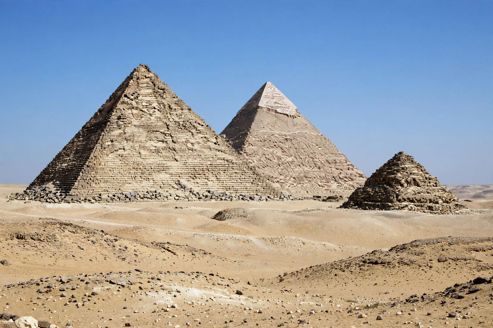

Egyptian pyramids

| Egyptian pyramids | |
| Period | c. 2670–664 BC (royal pyramids to the Third Intermediate Period) |
|---|---|
| Number known | more than 100 in Egypt |
| Largest | Great Pyramid of Giza (Khufu) |
| Earliest | Step Pyramid of Djoser, Saqqara |
| Purpose | Royal (later also private) tombs |
The Egyptian pyramids are ancient masonry structures located in Egypt. Most were built as tombs for the pharaohs and their consorts during the Old and Middle Kingdom periods. At least 118 Egyptian pyramids have been identified, the most famous standing at Giza on the outskirts of Cairo, where the Great Pyramid — the only surviving wonder of the ancient world — was the tallest human-made structure for more than 3,800 years.
- Development
- Construction
- The Giza plateau
- Symbolism and decline
Development
The pyramid form evolved from the flat-topped mastaba tomb. Around 2670 BC the architect Imhotep stacked six mastabas to create the Step Pyramid of Djoser at Saqqara. A century of experiment followed: the collapsed pyramid at Meidum, Sneferu's Bent Pyramid — which changes angle halfway up — and his Red Pyramid, the first successful smooth-sided "true" pyramid. The form culminated in the Fourth Dynasty pyramids of Khufu, Khafre and Menkaure at Giza. Later dynasties built smaller pyramids with rubble cores, many now badly ruined, and the practice was revived in the Twenty-fifth Dynasty and in the kingdom of Kush (in modern Sudan, which has more pyramids than Egypt).
Construction
Pyramids were raised by a paid, rotating Egyptian workforce — not, as popular tradition once held, by slaves — organised in crews and housed in purpose-built towns with bakeries, breweries and medical care, as excavations at Giza have shown. Core blocks were quarried locally; fine white casing limestone came from Tura across the Nile, and granite from Aswan, hundreds of kilometres south. Blocks were moved on sledges (lubricated with water, as tomb paintings show) and raised on ramps whose exact form remains debated. A logbook of an inspector named Merer, found at Wadi al-Jarf, records the transport of Tura limestone to Khufu's pyramid by boat.
The Giza plateau
Each Giza pyramid formed part of a complex: a mortuary temple against the pyramid's east face, a causeway descending to a valley temple at the floodplain's edge, subsidiary queens' pyramids, boat pits and cemeteries of officials. Beside Khafre's valley temple stands the Great Sphinx. The interior of Khufu's pyramid — with its Grand Gallery and King's Chamber — remains the focus of investigation, including the ScanPyramids muography project.
Symbolism and decline
The pyramid shape may evoke the primordial mound of creation (the benben), the sun's rays descending to earth, or a stairway for the king's soul. Pyramid Texts inscribed in late Old Kingdom pyramids provide the spells to guide the king's afterlife. After the Middle Kingdom, royal pyramid building ceased in favour of hidden rock tombs in the Valley of the Kings.
See also: Great Pyramid of Giza; Khufu; Khafre; Menkaure; Grand Egyptian Museum.